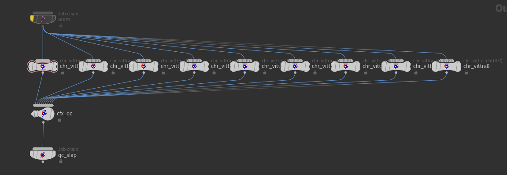

On stage · 23rd Annual VES Awards · Los Angeles · 2025
On Ronja
An Astrid Lindgren creature
Ronja, the Robber's Daughter is by Astrid Lindgren — one of Sweden's most beloved authors, and one of the writers whose stories shape how generations of us grow up. Being trusted to bring the vittra to screen is not something I take lightly.
I joined at the concept phase and stayed with her through to final delivery — gathering reference, helping shape the design, and then owning the technical side: feather grooming, muscle and feather simulation, lookdev, and the Job Chain automation that let her land in shots at the speed animation needed.
Concept & design
Designing the vittra
The vittra started here. The pieces below are concept paintings by Niklas Wallén from the show's discovery phase — long before any of the technical work began. They set the silhouette, the proportions, and the personality everything that followed had to live up to. See the full piece on his ArtStation →
Several facial poses had to be hit and blended between as animation drove the vittra's expressions. Her feathers had to read in three completely different motion profiles — standing, flying, and crawling along the ground — without the system fighting us in any of them. Dialing the design and face into the groom alone took a long stretch of iteration before we felt it land.
A second hard problem was intersections. At the density we were running, feathers couldn't be allowed to pass through each other or through the body — ever — and naive simulation fought us constantly. We ended up inventing a dedicated feather-growth simulation: feathers were anchored at their roots and "grown" into position along the surface normal, laid down naturally without intersecting. The same step ran twice — once at build time so the T-pose silhouette was clean, and again per-shot to settle the groom against each frame's deformation before runtime sim took over.
A third was multi-character shots. The story put more than one creature in frame, and animators needed to iterate on those shots in context — with the right interactions, the right occlusion, the right plate. Doing that as separate single-character renders to be re-assembled later wasn't acceptable on a feedback loop this tight.
The deeper problem was the cost of iteration itself. With a creature this design-driven, animators needed to try things and see them — fully groomed, simulated, lit and comped — not against bare animation playblasts. Historically that meant multi-week handoffs through CFX, Groom, Lighting and Comp. To make the vittra work, we had to bring that loop down to overnight.
Ronja, the Robber's Daughter · 2024
Queen Harpy — Technical Work
Queen Harpy · Ronja, the Robber's Daughter · VFX by Important Looking Pirates
I was the technical owner of the vittra. My role across the show was the integration layer — pulling rig, CFX, groom and lighting into a single creature that held together as one thing. Hands-on across the parts where that integration lived: feather lookdev, the full creature setup, the keyframe pose system and the transitions between poses, detangle simulations to keep the feathers in shape under motion, and the Generate Groom automation below that pulled the whole pipeline behind a single ShotGrid action.
Grey render — muscle and feather geometry
Full render — final lookdev
Generate Groom
The big technical piece on the show was a tool I built called Generate Groom — a Job Chain workflow animators triggered straight from ShotGrid against any of their animation versions. Submit, choose options, walk away.
Generate Groom UI — ShotGrid version selection and shot options
Underneath, the chain ran end to end:
1 · Pull animation
The chosen animation version is resolved from context and brought into the groom workfile.
2 · Generate groom
Feather grooming runs against the deformed mesh. Closeup option swaps in higher-detail groom presets when needed.
3 · Simulate
Feather and muscle simulation runs. A bypass option swaps the dynamic sim for a simple deform when the secondaries are misbehaving on a shot.
4 · Light
Result is brought into a lighting scene with the show's light template applied, then rendered.
5 · Slap comp
Renders are slap-comped in Nuke against the show's template comp and the plate, producing a reviewable image without manual setup.
6 · Daily
Published to ShotGrid and marked for review. Animator submits in the evening, reviews in the morning.
When a shot had multiple creatures, the system handled them in one submission: each character ran its own groom and simulation pass, then all of them were merged into a single lighting scene against the plate, lit and rendered together so the interactions read correctly, and slap-comped as one image. Animators iterated on creature interactions in context — not as separate single-character renders that had to be reassembled later. Some shots ran with up to fifty vittras in frame; the same submission handled them all.

Multi-vittra setup — one chain per character, merged into a single lighting scene
It was the first time at the studio that the full CFX → Groom → Lighting → Comp loop was authored as a single automation. Animators went from depending on multi-department handoffs to iterating directly against fully simulated, lit, comped renders themselves. It has been used on every CFX show since.
The three on stage with me are the heart of this. Niklas Wallén is the reason the vittra exists at all — every later choice is a return to what he drew first. Nicklas Andersson found her in motion: the silhouettes and shape language we kept coming back to whenever the design started to drift. And Gustav Ahrén carried that into 3D — sculpt, model, blendshapes, and a huge share of the feather design itself.
Martin Hernblad, our show supervisor, backed this work and gave the automation room to land. Anton Stattin is the rigger — the system the vittra moves on is his, and it held up under everything we threw at it. Jannes Kreyenberg handled every FX problem the chain couldn't — the kind of work that doesn't show up in any tool but holds shots together. Christopher Karlberg gave her presence: a huge part of the skin and eye lookdev is his. Per Bergstén came in for the final touches and pulled everything together. And Jenniefer W. was on this team throughout — there isn't a part of the character that's not better for her having been there.
Huge thanks to Important Looking Pirates as a whole, and a special shout-out to Tor Björn Olsson for being crazy enough to trust us with the vittra in the first place. And to the Visual Effects Society for the evening itself; standing in that room is something I'll be carrying with me for a while.
Full filmography
All Productions
Full credits — episodic and feature VFX work across eight years at ILP, with a per-show breakdown of what I shipped on each.